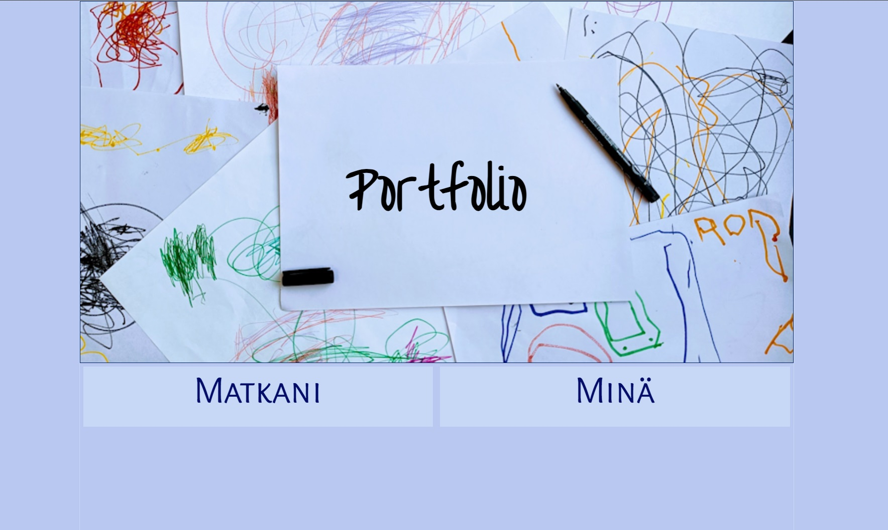

Ensimmäisenä työnä oppimisportfolio
Opintojen ensimmäinen työ oli tehdä www-sivut. Aiheen sai itse valita ja suositeltavien vaihtoehtojen joukossa oli portfolio, joka kuulosti mieleiseltä vaihtoehdolta. Koska sivujen koodaaminen ei ollut ennestään tuttua, pyrin mahdollisimman yksinkertaiseen lopputulokseen. Uskoisin ulkoasun kehittyvän opintojen ja taitojen edistyessä.